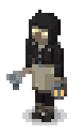
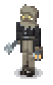
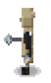
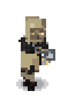

Drowned Reeve
Drowned Reeve is an elite of Lanternfen (level 17).
Drowned Reeve is an elite of Lanternfen (level 17).
In the game
In the game the Drowned Reeve is level 17, elite (a group's fight). It is undead. It is found in The Lantern Causeway. It can drop Reeve's Iron Mace (always), Drowned Reeve's Coat (25%) and Fen-Dark Pauldrons (25%).
Gallery







